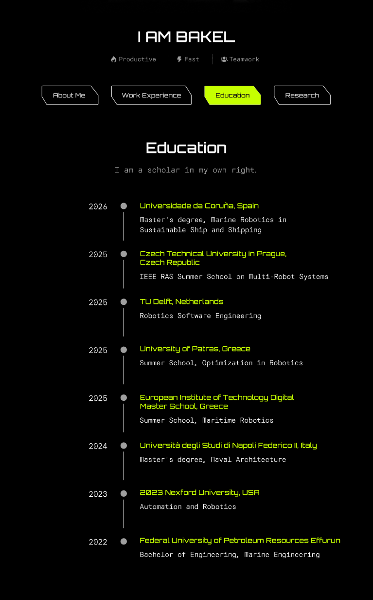
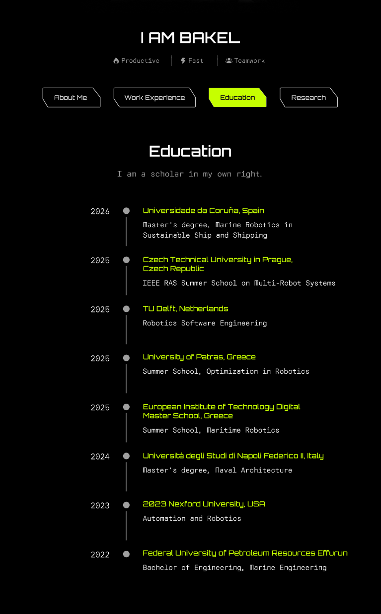

Robotics Core Workshop Documentation
Is this workshop worth it?
Find out in this brief overview below
At the end of the workshop, you’ll have:
A Certificate of Training certified by:
Aurora Robotics, Nigeria 🇳🇬
Volts Technologies, Kuwait 🇰🇼
Regalia Marine, Nigeria 🇳🇬
Strong Theoretical Foundations Understand the mathematics and principles behind robotics, not just how to use tools, but how to innovate.
Practical Coding Skills Learn to translate robotics theory into working Python, C++, Rust and MATLAB programs.
Simulation Mastery Build and test your robotics models in PyBullet, Gazebo, and ROS 2 environments.
Open-Source Contribution Experience Contribute to a real, live robotics project and have it reflected in your GitHub activity.
Professional GitHub Portfolio Weekly assignments pushed to GitHub to grow a presentable, industry-ready repository.
Problem-Solving Skills Learn to break down complex robotics problems into theory, code, and implementation steps.
Industry Insight & Career Guidance Participate in Wayforward Weekends for CV polishing, scholarship application tips, and industry trends.
Live Problem-Hacking Experience Join Sidequest Sundays to watch and interact as I solve real, challenging robotics problems live.
Confidence to Innovate Move beyond simply applying existing packages to creating your own algorithms and solutions.
Network & Community Be part of a growing robotics community through Aurora Robotics, connecting with like-minded innovators.
Prerequistes:
A laptop (Any Operating System, but preferably linux)
Software Installations will be done in the first week so don’t worry about the software you will need.
About The Tutor
 

{kind=link}